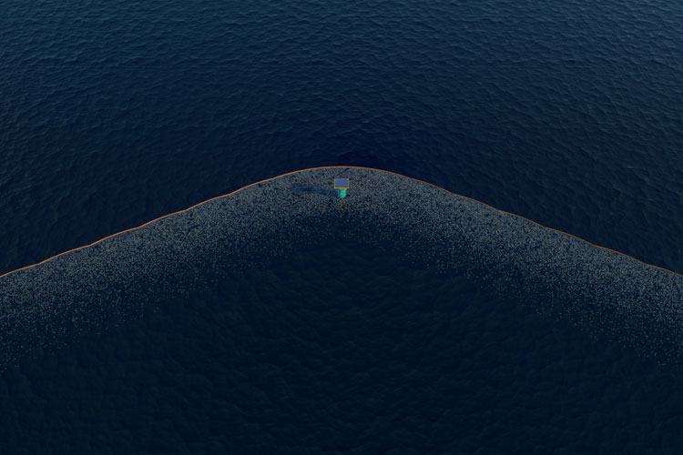
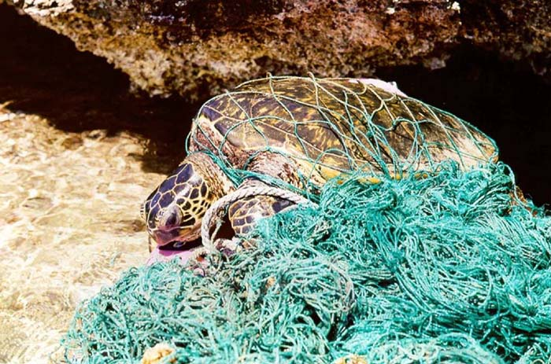
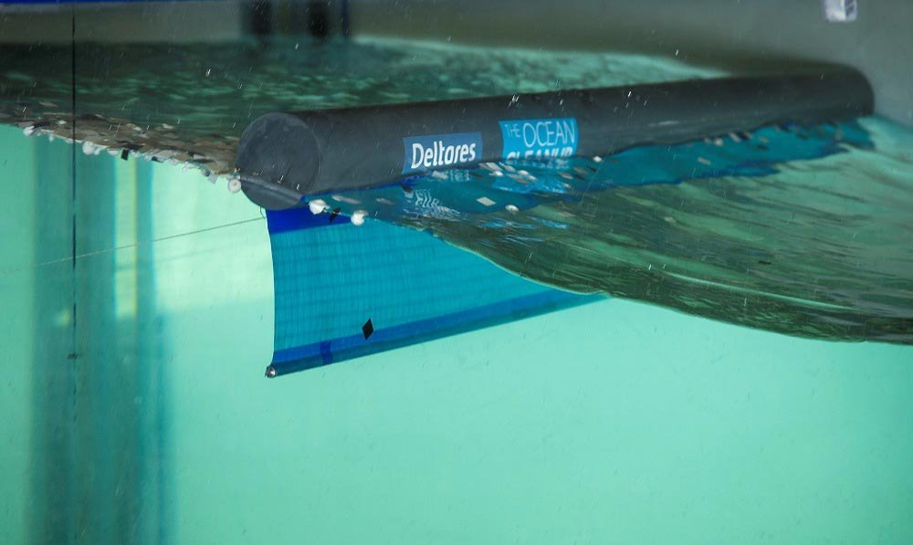

FIRST CLEANUP BARRIER TEST TO BE DEPLOYED IN DUTCH WATERS
The Ocean Cleanup will be deploying a 100 meter-long barrier segment in the second quarter of 2016 in the North Sea, 23 km off the coast of The Netherlands. It will be the first time our barrier design will be put to the test in...
read more

WHY WE NEED TO CLEAN THE OCEAN’S GARBAGE PATCHES
At The Ocean Cleanup, we’re developing the first feasible method to clean up world’s ocean garbage patches. Five vast areas of Open Ocean, known as the subtropical gyres, act as a trap for ocean plastic. We specifically focus on...
read more
OCEAN CLEANUP ARRAY TO UNDERGO 3D TESTING AT MARIN
The Ocean Cleanup’s development of its cleanup technology has entered a new testing stage. Engineers are currently installing a scale model of the Ocean Cleanup Array in an offshore basin at the world-renowned Maritime Research...
read more

DELTARES TESTS CONFIRM WORKABILITY OF BOOM DESIGN
In the past months our engineering team has continued its work on developing the barriers designed to collect ocean plastics. To assess how the boom behaves in water, The Ocean Cleanup collaborated with independent research...
read more
THE OCEAN CLEANUP PREPARES FOR 2020 PACIFIC CLEANUP
The Ocean Cleanup successfully concluded the Mega Expedition with the arrival of a first group of vessels including the fleet’s 171ft mothership in the port of San Francisco today. Using a series of measurement techniques...
read more
TRANSPAC PARTICIPANTS TEAM UP WITH THE OCEAN CLEANUP
Erratic winds and electrical storms are no longer the only factors complicating the odds in the 2225 nautical mile transpacific yacht race. Race participants, many of whom are about to help conduct The Ocean Cleanup’s Mega...
read more


Contact Us